Colours, type and chart rules shared by every Britain Elects project · tokens
Every value on this page comes from one file, tokens.json. Change a colour there and push: the build regenerates be.css and be.js, and every page that links them picks up the change on its next load.
<link rel="stylesheet" href="https://glasgow46239.github.io/style/be.css"> <script src="https://glasgow46239.github.io/style/be.js"></script>
BE.fill('Lib Dem') // '#FAA61A' lines, bars, map fills
BE.text('ldem') // '#9C6B25' party-coloured text on white
BE.fill('con', {dark: true}) // '#1C7A98' force the dark-background value
BE.colours(['con','lab','ref']) // {con:'#05718F', lab:'#CF4545', ref:'#15B6C2'}
BE.name('grn', 'analysis') // 'the Greens'
BE.signal('negative', 'text') // '#B35A0E'
BE.neutral('grid') // '#E5E5E5'Any spelling works: LD, LDem, Lib Dem and Liberal Democrats all resolve to the same party, and so do Datawrapper-style column names such as Con (to 2024 election).
.headline { font-family: var(--be-font); color: var(--be-ink); }
.lab-figure { color: var(--be-lab-text); }
.bar.ref { background: var(--be-ref); }
/* or the ready-made classes: be-c-lab (text), be-bg-lab (fill) */from brand import party_colour
party_colour("Reform") # '#15B6C2'Pages stay light unless they say otherwise. Put data-theme="dark" on <html> for a dark page, or data-theme="auto" to follow the reader's system setting. The CSS variables and BE.fill() switch to the dark-background values automatically.
Each party has a fill for lines, bars and maps, and a text colour that passes 4.5:1 contrast. Where the fill is already dark enough, the two are the same. Every pair that shares a chart stays distinguishable for readers with red-green colour blindness.
| Party | Key | Fill | Text on white | Fill on dark | Text on dark |
|---|
For Northern Ireland and historic charts. These aren't tuned against every core party.
| Party | Key | Fill | Text on white | Fill on dark | Text on dark |
|---|
For approval ratings, swing and change trackers. Blue and orange stay distinct for every common type of colour blindness and can't be mistaken for Labour red or Green green. Always pair the colour with a sign. Series named Positive, Negative or Unsure (or Approve, Disapprove, Don't know) get these colours automatically, with "Unsure" in neutral grey.
The house style, carried over from the Datawrapper trackers.
Helvetica throughout, falling back to Arial. Two weights only: 400 and 700. No web font to load.
Three forms. General for labels and keys, analysis for running prose, short for tight spaces and table headers.
| General | Analysis | Short |
|---|
The ballot cross is the white space between the four chevrons. The logo colours are fixed brand colours and are deliberately not linked to the party palette, so data colours can change without changing the logo.

mark-mono-white.svg · one colour, reversed| Arm | Light | Dark |
|---|
| Token | CSS variable | Light | Dark |
|---|